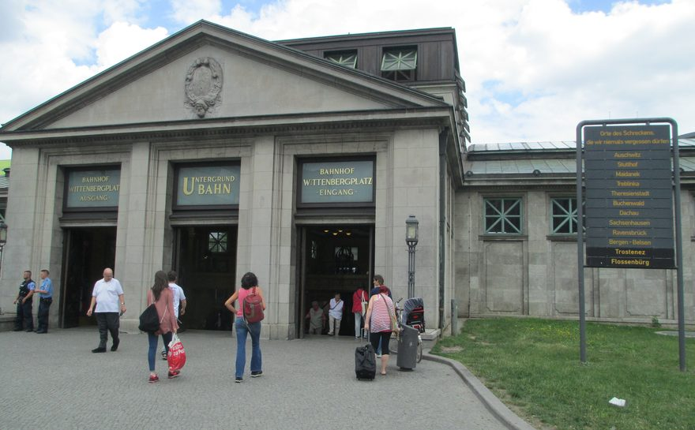

How far west is the Ku'damm actually worth walking?
The Tauentzienstraße and Kurfürstendamm axis runs about 4.1 km west from Wittenbergplatz. Step through six stops and see where the useful visitor walk ends.
Wittenbergplatz → RathenauplatzAbout 4.1 km • 6 stops
Stop 1 of 6

From the start
Walking time
Axis left
What is actually here
Image credits
All photographs are from Wikimedia Commons. Article images were resized to a 1600 px long edge; route versions were resized and cropped to 880 × 545 px.